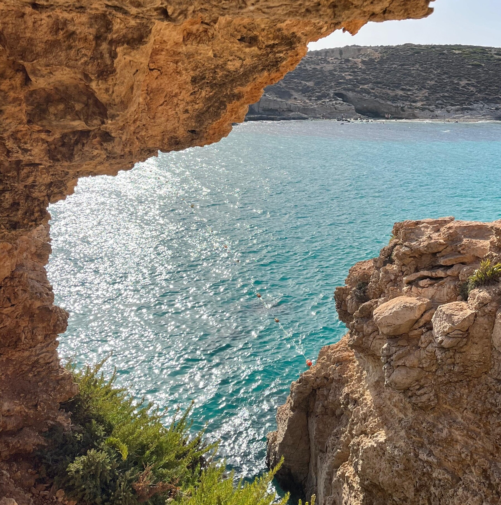
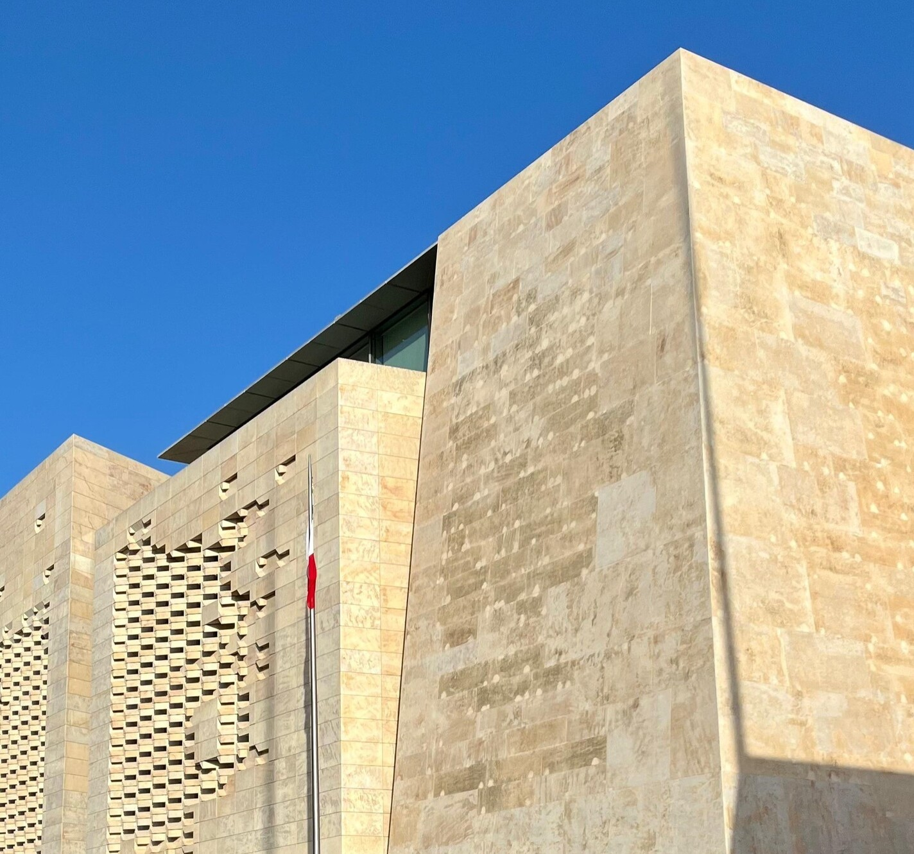
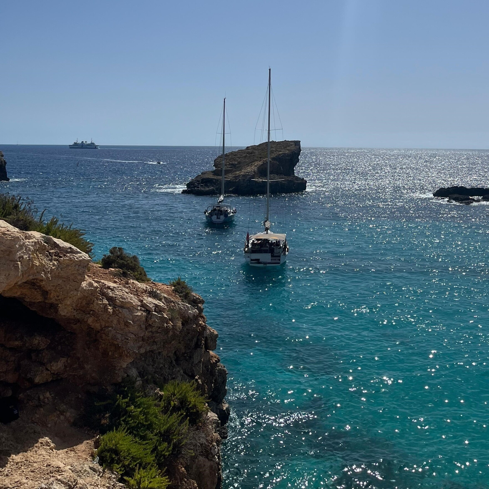
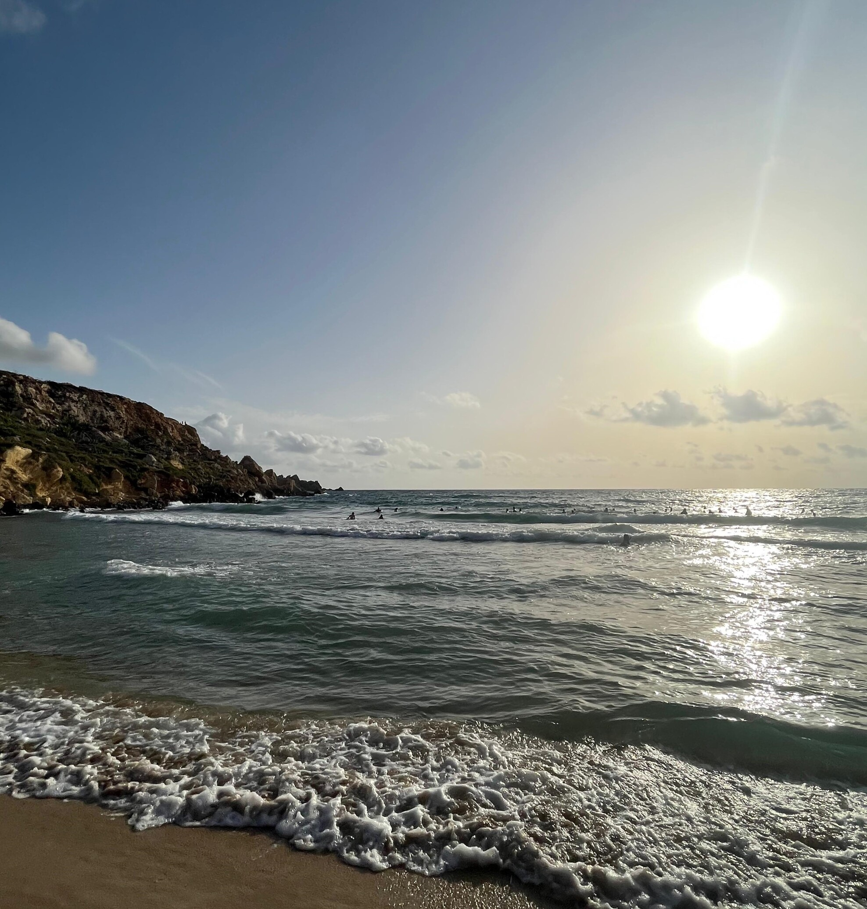
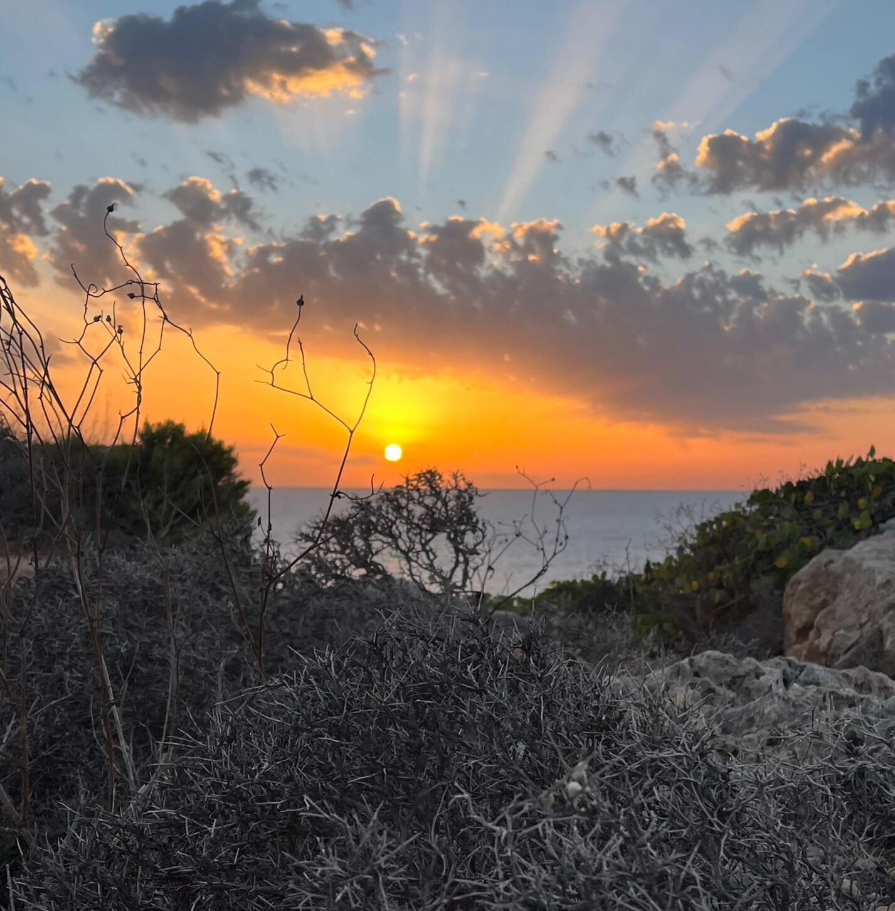
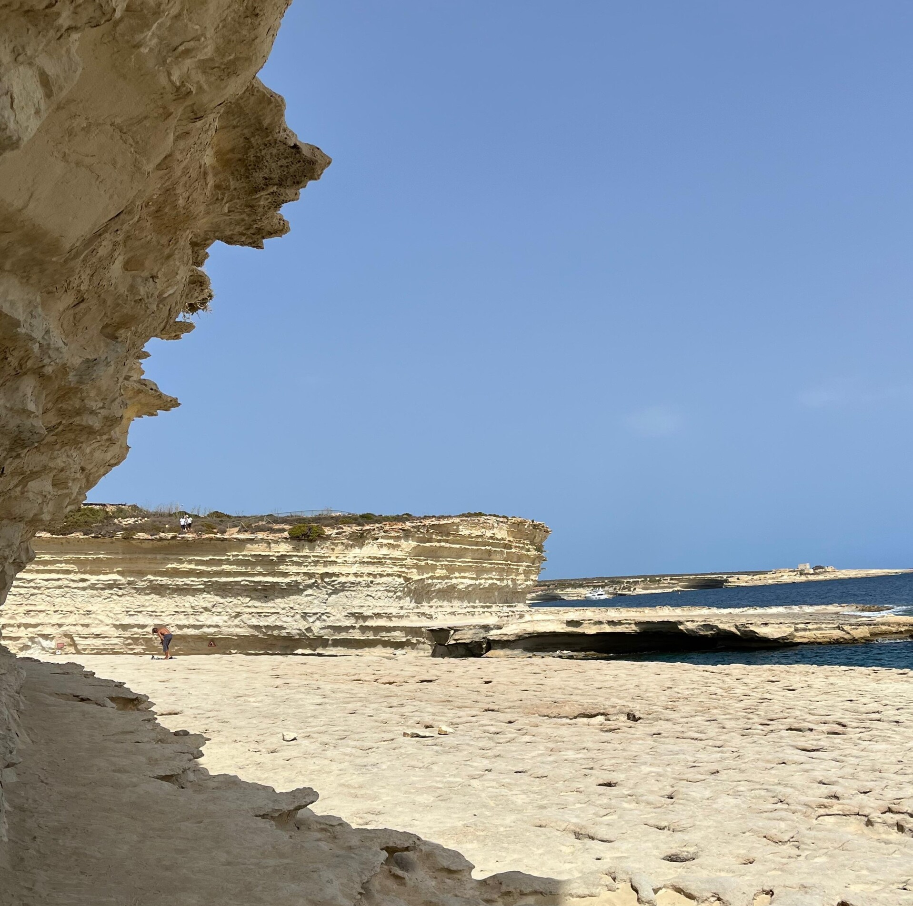
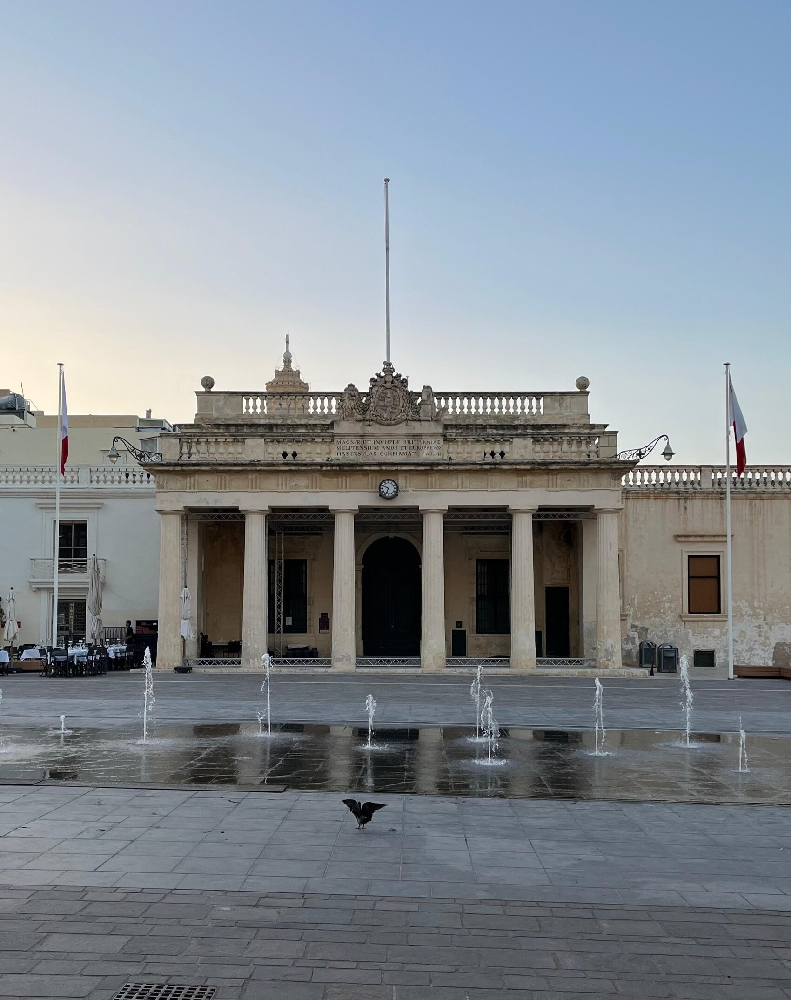

Malta: tour delle spiagge più belle
Un viaggio di 6 giorni tra le spiagge più spettacolari e scorci mediterranei di Malta.
Panoramica dell'Itinerario
Questo itinerario di 6 giorni ti porta alla scoperta delle spiagge più belle di Malta, alternando giornate di mare in baie mozzafiato come la Blue Lagoon e St. Peter's Pool a passeggiate nei centri storici come La Valletta e serate vivaci a Paceville. Una combinazione perfetta di relax, natura e cultura mediterranea.
Itinerario Giorno per Giorno
Arrivo a Malta e prime spiagge

Attività:
- Mattina: Arrivo all'aeroporto di Malta e trasferimento verso la zona di Paceville / St. Julian's. Dall'aeroporto è possibile prendere uno dei bus diretti della linea X, molto utilizzati dai turisti, con un costo di circa €2. Dopo circa 20 minuti si arriva in zona centrale, ideale come base per visitare l'isola. Sistemazione e primo contatto con l'atmosfera mediterranea.
- Pomeriggio: Relax a St George's Bay, una delle spiagge più comode da raggiungere a piedi da Paceville. La spiaggia è sabbiosa, l'acqua è limpida e generalmente meno affollata rispetto ad altre zone più famose, perfetta per un primo bagno e per rilassarsi dopo il viaggio.
- Sera: Passeggiata a Paceville, cuore della vita notturna maltese, con tantissimi locali, bar e discoteche frequentate soprattutto da giovani. Cena in zona e possibilità di fermarsi per bere qualcosa o vivere la movida della sera.
Blue Lagoon e Comino

Attività:
- Mattina: Partenza presto con autobus verso Cirkewwa con la linea 222 e successivo traghetto per raggiungere la Blue Lagoon sull'isola di Comino. Il costo del traghetto è di circa €10 andata e ritorno. Arrivo in una delle baie più spettacolari di Malta, con acqua turchese e fondali perfetti per nuotare e fare snorkeling.
- Pomeriggio: Giornata interamente dedicata al mare tra bagni e relax. La Blue Lagoon è molto affollata, soprattutto in alta stagione, ma resta una tappa imperdibile. Sull'isola sono presenti piccoli chioschi dove acquistare snack e bevande, tra cui le tipiche pina colada servite direttamente dentro l'ananas.
- Sera: Rientro a Malta nel tardo pomeriggio e ritorno a Paceville. Cena tranquilla e serata rilassante dopo una giornata intensa di mare.
Golden Bay e centro storico

Attività:
- Mattina: Spostamento in autobus verso Golden Bay con la linea 225, una delle spiagge più belle di Malta. Qui si trova sabbia dorata, mare limpido e ampi spazi dove rilassarsi, ideale per trascorrere diverse ore tra sole e bagno.
- Pomeriggio: Continuazione della giornata in spiaggia, con pranzo veloce a base di panini o street food, soluzione molto comune soprattutto nelle giornate al mare.
- Sera: Spostamento verso La Valletta per una passeggiata tra le sue stradine storiche. Giro tranquillo nel centro con aperitivo e vista sul mare, perfetto per vivere l'atmosfera della capitale senza visite impegnative.
Paradise Bay

Attività:
- Mattina: Partenza in autobus verso la zona di Cirkewwa e successiva camminata a piedi per raggiungere Paradise Bay. L'ultimo tratto richiede una breve discesa, ma il panorama ripaga completamente lo sforzo.
- Pomeriggio: Giornata di relax in una delle baie più tranquille dell'isola. Rispetto ad altre spiagge, Paradise Bay è meno affollata e più rilassante, con acqua limpida e un contesto naturale molto suggestivo.
- Sera: Rientro verso Paceville, cena e possibilità di uscire nuovamente tra locali e discoteche della zona.
St. Peter's Pool e scogliere naturali

Attività:
- Mattina: Partenza in autobus verso Marsaxlokk con la linea 81 e proseguimento con barca fino a St. Peter's Pool, con un costo di circa €10 andata e ritorno. Questo luogo è famoso per le sue piscine naturali scavate nella roccia.
- Pomeriggio: Tempo libero tra bagni e tuffi dalle scogliere, una delle esperienze più caratteristiche di Malta. La zona è leggermente più scomoda da raggiungere rispetto ad altre spiagge, ma proprio per questo mantiene un fascino più naturale e meno turistico.
- Sera: Rientro e cena sul lungomare, con possibilità di scegliere tra street food o ristoranti locali.
La Valletta e partenza

Attività:
- Mattina: Ultimo spostamento verso La Valletta con la linea 13 per una passeggiata finale tra le vie della capitale. Tempo libero per colazione, souvenir e ultimi scorci sul mare.
- Pomeriggio: Trasferimento verso l'aeroporto e volo di ritorno.
Riepilogo Costi Stimati
*Costi esclusi: voli, assicurazione viaggio, spese personali
Consigli Pratici
Quando Andare
Il periodo migliore per visitare Malta è da maggio a settembre, con giornate soleggiate e mare ideale per nuotare e fare snorkeling. Luglio e Agosto possono essere molto caldi.
Come Muoversi
Malta è ben servita da autobus pubblici che collegano tutte le spiagge. I biglietti singoli acquistati a bordo costano circa €2,50 in estate. È possibile acquistare una carta settimanale per circa €25, con viaggi illimitati su tutte le tratte per 7 giorni consecutivi. I taxi sono alternative comode ma più costose, mentre il noleggio di un veicolo può essere utile se vuoi più autonomia, ricordando che il traffico può essere intenso e le strade strette in alcune zone, oltre alla guida con volante a destra.
Dove Alloggiare
Paceville o St. Julian's sono ottime basi per esplorare l'isola, con facile accesso a spiagge, ristoranti e trasporti pubblici.
Cosa Assaggiare
Prova piatti tipici locali come il fenek (coniglio), il pastizz e i frutti di mare freschi accompagnati da un bicchiere di vino.